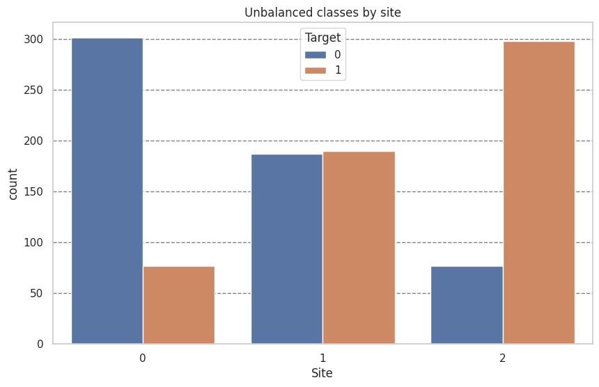
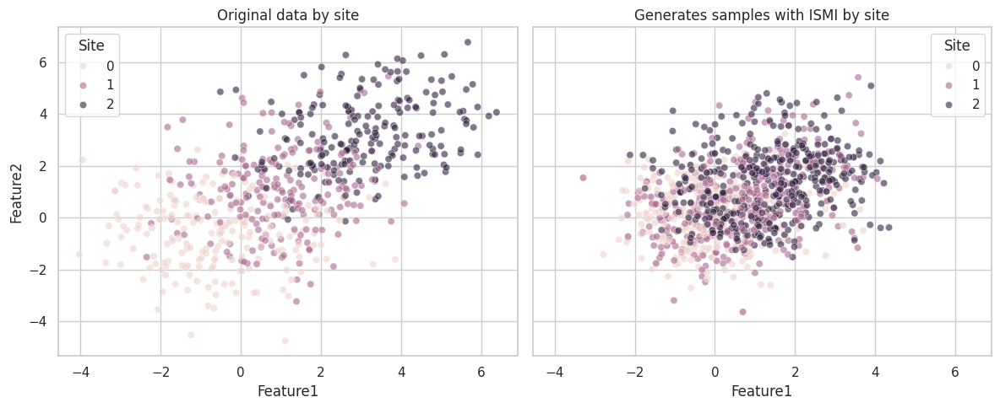

Inter-Site Matched Interpolation (ISMI) - Multisite Harmonization Example#
This notebook demonstrates the use of InterSiteMatchedInterpolation for harmonizing multi-site neuroimaging data.
Unlike Intra-Site Interpolation (ISI) which balances classes within each site independently, ISMI creates synthetic samples by interpolating between matched subjects across different sites, reducing site-related confounds while preserving biological signal.
Setup and Imports#
import matplotlib.pyplot as plt
import numpy as np
import pandas as pd
import seaborn as sns
# UniHarmony imports
from uniharmony import make_multisite_classification, verbosity
from uniharmony.interpolation import InterSiteMatchedInterpolation
verbosity("warning")
sns.set_theme(style="whitegrid")
Generate Synthetic Multi-Site Data#
We create a dataset with 3 sites, simulating a scenario where:
Site A: Younger population, slight class imbalance
Site B: Older population, different feature distribution
Site C: Mixed population, different acquisition protocol
# Generate base dataset
X, y, sites = make_multisite_classification(n_samples=600, n_features=2, n_classes=2, n_sites=3, balance_per_site=[0.2, 0.5, 0.8])
# Simulate site-specific age and sex covariates for matching
site_names = np.unique(sites)
n_per_site = len(X) // len(site_names)
ages = np.concatenate(
[
np.random.normal(50, 20, n_per_site), # Site A: young
np.random.normal(50, 20, n_per_site), # Site B: old
np.random.normal(50, 20, n_per_site), # Site C: mixed
]
)
sex = np.concatenate(
[
np.random.choice(["M", "F"], n_per_site, p=[0.9, 0.1]), # Site A: male-biased
np.random.choice(["M", "F"], n_per_site, p=[0.5, 0.5]), # Site B: balanced
np.random.choice(["M", "F"], n_per_site, p=[0.1, 0.9]), # Site C: female-biased
]
)
# Reshape for the interpolator
categorical_covariate = sex.reshape(-1, 1)
continuous_covariate = ages.reshape(-1, 1)
df = pd.DataFrame({"Target": y, "Site": sites})
plt.figure(figsize=[10, 6])
plt.title("Unbalanced classes by site")
sns.countplot(df, x="Site", hue="Target")
plt.grid(axis="y", color="black", alpha=0.5, linestyle="--")
Apply Inter-Site Matched Interpolation (ISMI)#
We use ISMI with the following configuration:
Mode: pairwise (all site combinations)
Matching: Age (±5 years tolerance) and Sex (exact match)
Alpha: 0.3 (constant) - keeps synthetic samples closer to base site
k: 2 (generate 2 synthetic samples per match)
# Configure ISMI
ismi = InterSiteMatchedInterpolation(
covariate_tolerance=5, # tolerance for age
concatenate=False,
)
# Apply interpolation
X_ismi, y_ismi = ismi.fit_resample(
X, y, sites=sites, categorical_covariate=categorical_covariate, continuous_covariate=continuous_covariate
)
# To maintain compatibility with sklearn and imlearn, sites are stored as attributes
sites_ismi = ismi.sites_resampled_
Visualize Harmonized Data#
df = pd.DataFrame({"Target": y_ismi, "Site": sites_ismi})
plt.figure(figsize=[10, 6])
plt.title("Unbalanced classes by site")
sns.countplot(df, x="Site", hue="Target")
plt.grid(axis="y", color="black", alpha=0.5, linestyle="--")

df_orig = pd.DataFrame(X, columns=["Feature1", "Feature2"])
df_orig["Site"] = sites
df_orig["Phase"] = "Original"
df_harm = pd.DataFrame(X_ismi, columns=["Feature1", "Feature2"])
df_harm["Site"] = sites_ismi
df_harm["Phase"] = "Harmonized"
fig, axes = plt.subplots(1, 2, figsize=(12, 5), sharex=True, sharey=True)
sns.scatterplot(data=df_orig, x="Feature1", y="Feature2", hue="Site", alpha=0.6, ax=axes[0])
axes[0].set_title("Original data by site")
sns.scatterplot(data=df_harm, x="Feature1", y="Feature2", hue="Site", alpha=0.6, ax=axes[1])
axes[1].set_title("Generates samples with ISMI by site")
plt.tight_layout()

Key Takeaways#
This evaluation correctly measures whether ISMI helps the model learn site-invariant features that generalize to new, unseen sites.
Conclusion#
This notebook demonstrated InterSiteMatchedInterpolation for multi-site
harmonization. Key findings:
ISMI generates synthetic samples by interpolating between matched subjects across sites, using covariates (age, sex) to ensure biological plausibility.
Alpha reversal efficiently handles bidirectional interpolation without redundant matching (Site A→B with α, Site B→A with 1-α).
Configuration options (k, alpha, mode) allow flexible control over the harmonization process.
Unmatched samples tracking helps identify site pairs with poor overlap.
For real neuroimaging data, ISMI can help reduce site-related confounds while presaging biological signals relevant to the target variable.